和歌山県でおすすめのLLMO会社10選｜費用相場と選び方もわかりやすく解説
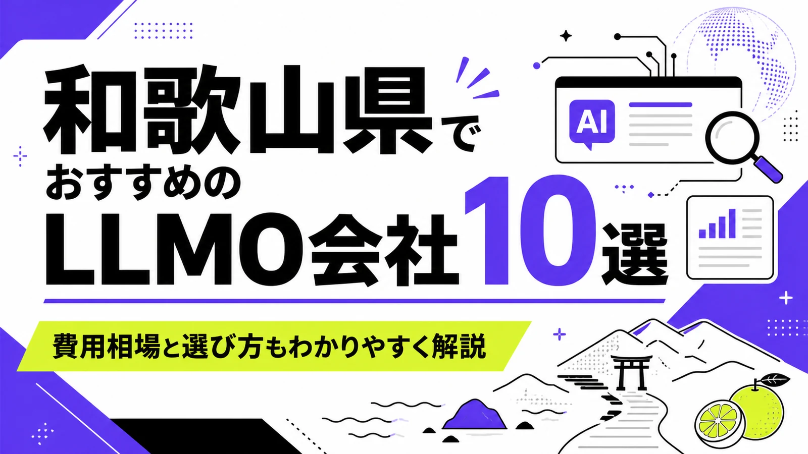
和歌山県でLLMO会社を選ぶときは、「和歌山のホームページ制作会社」だけで探すと判断が荒くなります。和歌山市・海南市は生活サービス、採用、BtoB、製造業が重なり、紀北は大阪・奈良との移動商圏、有田・日高・みなべは農産品や地場産品、田辺・白浜・高野山・熊野古道・那智勝浦・串本は観光と宿泊の文脈が強くなります。
和歌山県統計情報館では、令和8年3月1日現在の推計人口が863,744人、世帯数が394,917世帯と公表されています。さらに和歌山県の観光データでは、令和6年の観光客数が約3,273万人、宿泊客が約506万人、日帰り客が約2,767万人とされています。人口規模に対して観光接点が大きいため、和歌山県のLLMOは地元客向けと観光客向けの質問を分ける必要があります。
この記事では、和歌山県でLLMOに取り組むときに比較したい会社、選び方、費用相場をまとめます。基礎から確認したい方はLLMO対策の基礎記事、近隣商圏も比較したい方は奈良県の比較記事、大阪府の比較記事、兵庫県の比較記事も参考にしてください。
目次

和歌山県でおすすめのLLMO会社10選
今回は、和歌山県内に拠点や強い対応実績があり、Web制作、SEO、Webマーケティング、Web運用、システム、動画、EC、ブランディング、LLMOなどの公開情報を確認しやすい会社を中心に選びました。和歌山県内でLLMO専業を前面に出す会社はまだ多くありません。そのため、AIに引用されやすい情報設計、FAQ、構造化データ、SEO、取材、更新運用まで広げて支援できるかを見ています。
和歌山県では、和歌山市・海南市の都市型商圏、紀の川市・岩出市・橋本市の大阪近接商圏、有田・湯浅・みなべの農産品、田辺・白浜・高野山・熊野古道・那智勝浦・串本の観光文脈で、AIに聞かれる質問が変わります。まずは下の表で、自社の地域と目的に近い会社を絞ってください。
| 会社名 | 拠点・対応 | 向いている相談 |
|---|---|---|
| 株式会社BEE | 和歌山市 | Web制作、Web開発、Webマーケティング、DX支援まで広く相談 |
| 株式会社Web Ground | 和歌山市 | Webメディア、ホームページ制作、Web集客、分析改善 |
| VL株式会社 | 和歌山市 | ホームページ制作、運用保守、診断改善、広告、動画編集 |
| Aster Work | 和歌山市 | Web制作、Web運用支援、SEO、EC、地域密着型の更新支援 |
| 株式会社ダススタイル | 海南市 | Web制作、WordPress、EC、SEO、システム構築、保守運用 |
| アドフロンティア | 和歌山・紀北対応 | 地域密着のホームページ制作、SEO、更新システム、低価格プラン |
| 株式会社nil | 和歌山市 | 経営課題に向き合うWebサイト制作、企画、保守運用 |
| 株式会社クロノナイツ | 和歌山・関西対応 | ホームページ、PR動画、SNSコンテンツ、DXサポート |
| hacca | 有田郡湯浅町 | Web制作、ブランディング、EC、SEO、写真撮影、文章作成 |
| 株式会社LiKG | 全国対応 | LLMOコンサルティング、SEO連動、一次情報を使った記事制作 |
株式会社AIMAは和歌山県内の会社ではありませんが、全国対応でLLMO支援を提供しています。月額5万円のLLMO支援は初期費用なし・1ヶ月単位で始められ、質問設計、記事制作、引用チェックに絞って実務を進められます。和歌山市、海南市、田辺市、白浜町、新宮市、有田市、みなべ町、高野町のように商圏が分かれる場合も、まず無料LLMO診断で優先順位を確認できます。
株式会社BEE
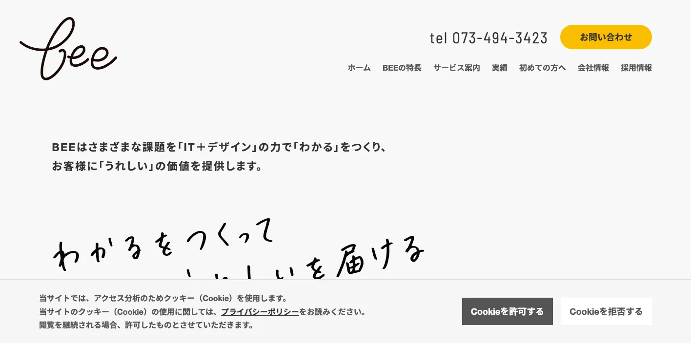
株式会社BEEは、和歌山でホームページ制作会社として20年培ったノウハウをもとに、ホームページ制作、Webサイト制作、グラフィックデザイン、Webシステム・アプリ開発、Webマーケティング支援、DX支援まで扱う会社です。
LLMOでは、会社やサービスの情報をAIが読み取りやすい形に整えるだけでなく、問い合わせや採用につながる導線も必要です。BEEは制作、開発、マーケティング、DXまで相談しやすいため、和歌山市周辺の中小企業、製造業、医療福祉、採用サイト、業務システムを含む改善に向いています。
株式会社Web Ground
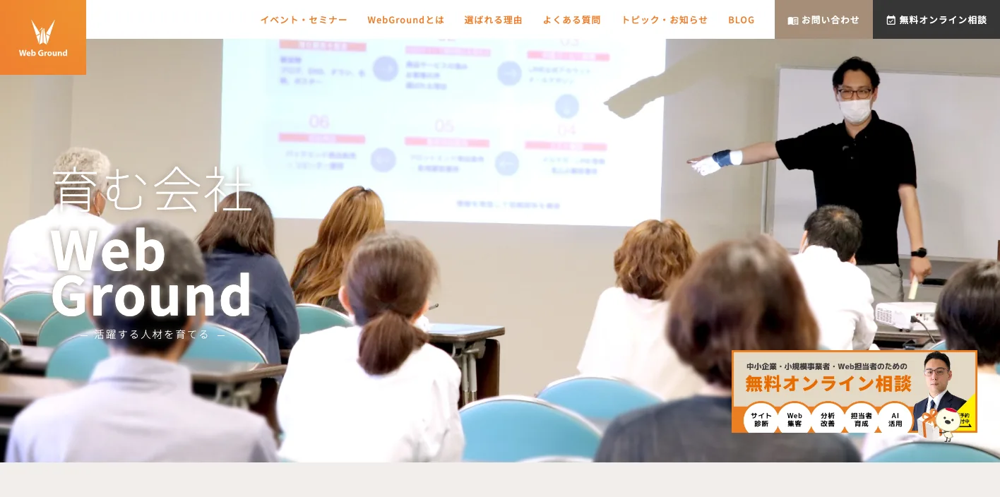
株式会社Web Groundは、和歌山市のWeb制作会社です。公式サイトでは、Webメディアの価値を最大化する企画、制作、マーケティング、コンサルティングを行う会社として、ホームページ制作、Web集客の仕組み化、Webサイト分析・改善、オンライン相談を案内しています。
和歌山県のLLMOでは、公開済みのホームページやブログを「作ったまま」にせず、質問に答えられる資産へ育てることが重要です。Web GroundはWebメディアや分析改善を軸にしているため、既存サイトを活かしながら、記事、サービスページ、FAQ、導線を改善したい会社に合います。
VL株式会社
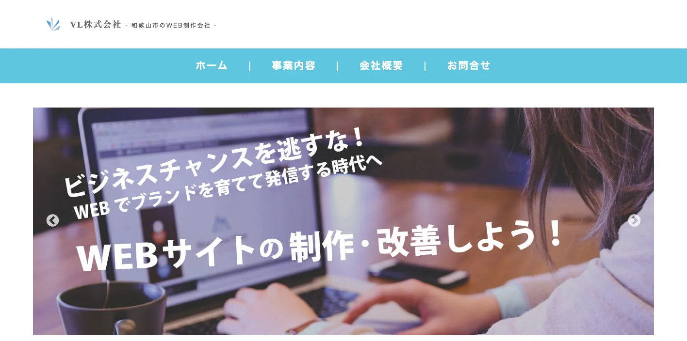
VL株式会社は、和歌山市のWeb制作会社です。ホームページ制作、デザイン制作、運用保守、診断や改善、広告作成、動画編集など、Webに関する幅広い依頼に対応しています。
AIに引用されるには、会社の強み、サービス、料金、対応エリア、実績、よくある質問が分かりやすくまとまっている必要があります。VL株式会社はホームページ制作と改善を相談しやすいため、和歌山市・岩出市・紀の川市の店舗、住宅、不動産、部品製造、サービス業が、既存サイトを整え直すときに候補になります。
Aster Work
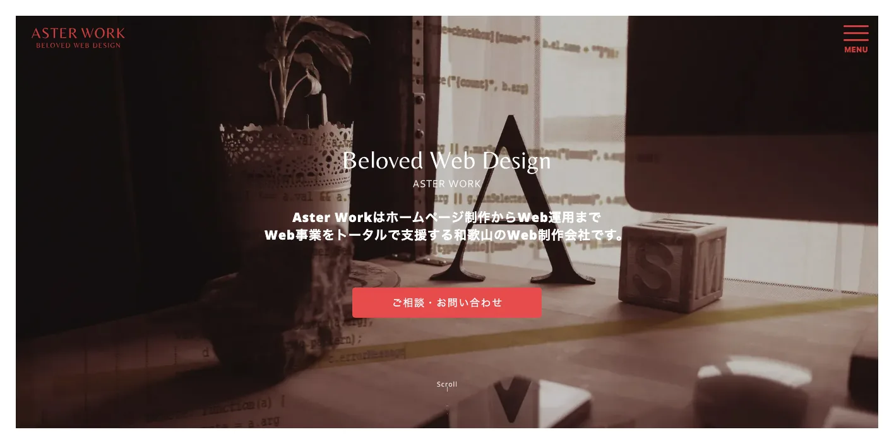
Aster Workは、和歌山市を拠点に、ホームページ制作、Webデザイン、Web運用支援、SEO対策、EC、LP、保守管理などを行うWeb制作会社です。公式サイトでは、和歌山県全域と大阪府の一部を訪問対応エリアとして案内し、幅広い業種の実績を示しています。
和歌山県では、地元店舗や小規模事業者が「自分で更新できるサイト」を持つことがLLMOの土台になります。Aster WorkはWeb制作後の運用支援やSEOも扱っているため、和歌山市、海南市、橋本市、有田市、田辺市、白浜町など、県内各地の中小企業が情報発信を続けたい場合に向いています。
株式会社ダススタイル
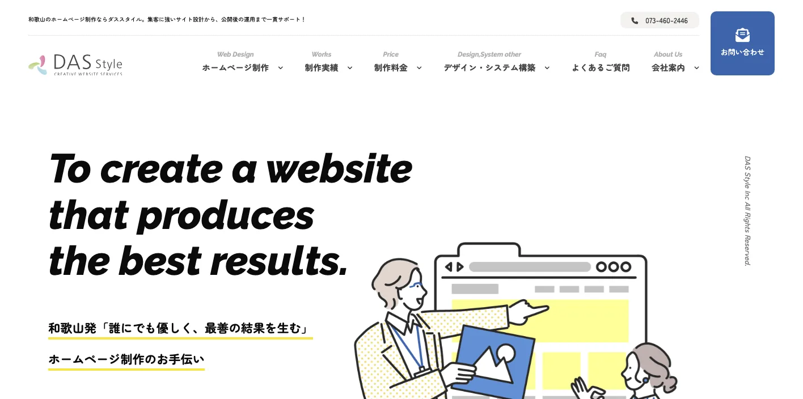
株式会社ダススタイルは、海南市を拠点に、ホームページ制作、WordPress制作、ECサイト制作、SEO、グラフィックデザイン、システム構築、保守メンテナンスを提供する制作会社です。公式サイトでは、和歌山県内各市町村への訪問可能地域も案内しています。
LLMOでは、検索エンジンにやさしい構造と、ユーザーに分かりやすい情報の両方が必要です。ダススタイルはSEO、CMS、EC、システムまで扱うため、海南市、和歌山市、有田市、御坊市、田辺市などで、更新しやすいサイト、EC、予約、問い合わせ導線を整えたい事業者に合います。
アドフロンティア
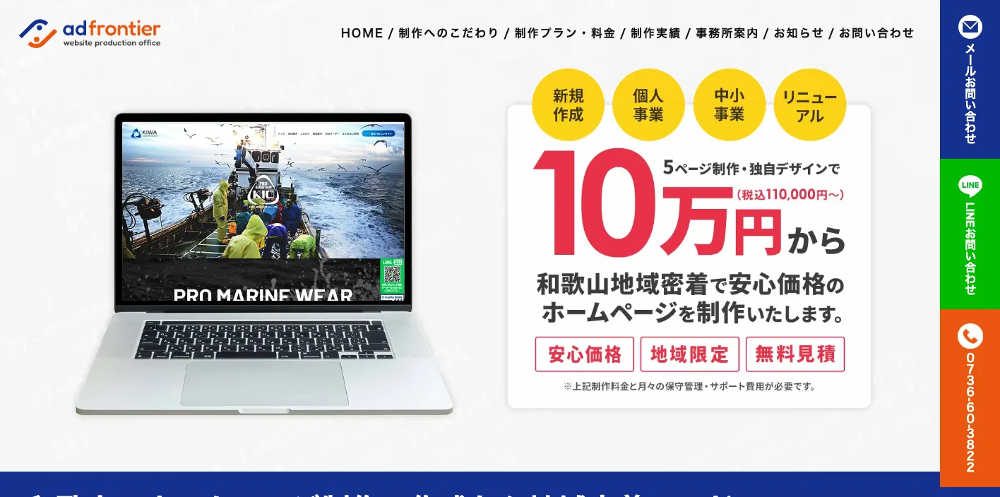
アドフロンティアは、和歌山地域密着のホームページ制作事務所です。オリジナルデザイン、SEO対策、更新システム、保守・運営を重視し、和歌山市、岩出市、紀の川市、海南市、橋本市、伊都郡などのエリアを中心に対応しています。
小規模店舗や個人事業主がLLMOを始める場合、最初から大きな予算をかけるより、公式サイトの基本情報、更新機能、FAQ、地域名を整えるほうが現実的です。アドフロンティアは価格帯や保守費用を公開しているため、紀北エリアで低予算からWebの土台を作りたい事業者に向いています。
株式会社nil
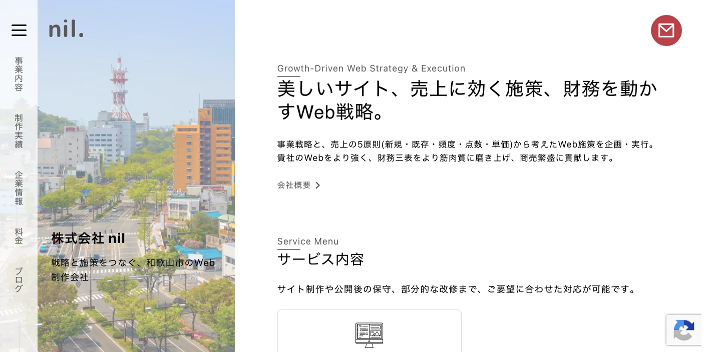
株式会社nilは、和歌山市のWebサイト制作会社です。公式サイトでは、経営課題を解決するWebサイト制作会社として、Webサイトの企画から保守・運用まで一社完結で提供することを案内しています。
LLMOは記事を増やすだけではなく、経営上の強みを言葉にする作業です。株式会社nilは経営視点のWeb戦略を掲げているため、単なる見た目の刷新ではなく、問い合わせ、採用、ブランド、営業資料との整合性まで整理したい和歌山市周辺の企業に合います。
株式会社クロノナイツ
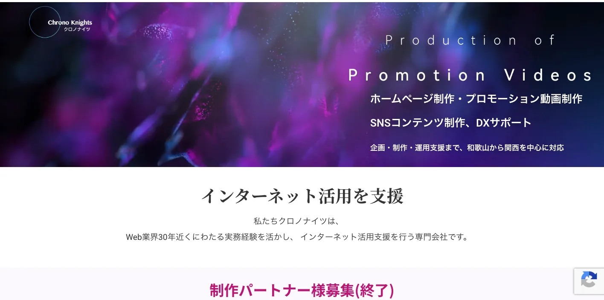
株式会社クロノナイツは、和歌山から関西を中心に、ホームページ制作、プロモーション動画制作、SNSコンテンツ制作、DXサポート、運用支援を行う会社です。公式サイトでは、Web業界30年近くの実務経験を活かしたインターネット活用支援を案内しています。
和歌山県の観光、宿泊、地場産品、採用広報では、文章だけでなく写真、動画、SNS、Webサイトの一体運用が必要になることがあります。クロノナイツは動画やSNSまで扱うため、白浜、田辺、高野山、熊野古道、串本などの観光事業者や、採用広報を強めたい企業に向いています。
hacca
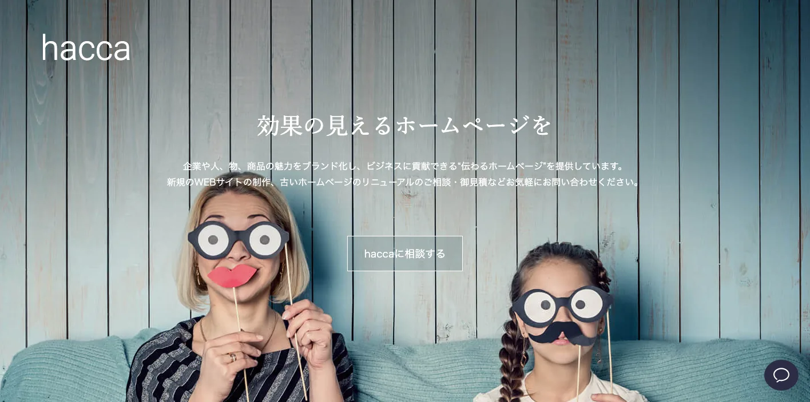
haccaは、和歌山県有田郡湯浅町のホームページ制作会社です。Webサイトのブランディング、マーケティング、Webプロモーション、写真撮影、文章作成、キャッチコピー作成などをワンストップで支援しています。
有田、湯浅、広川、みなべ、日高周辺では、みかん、梅、醤油、漁業、観光、地域ブランドなど、商品の背景を伝える力が重要です。haccaは写真撮影や文章作成まで扱うため、地場産品やEC、観光、地域事業の一次情報をWeb上に整理したい場合に候補になります。
株式会社LiKG
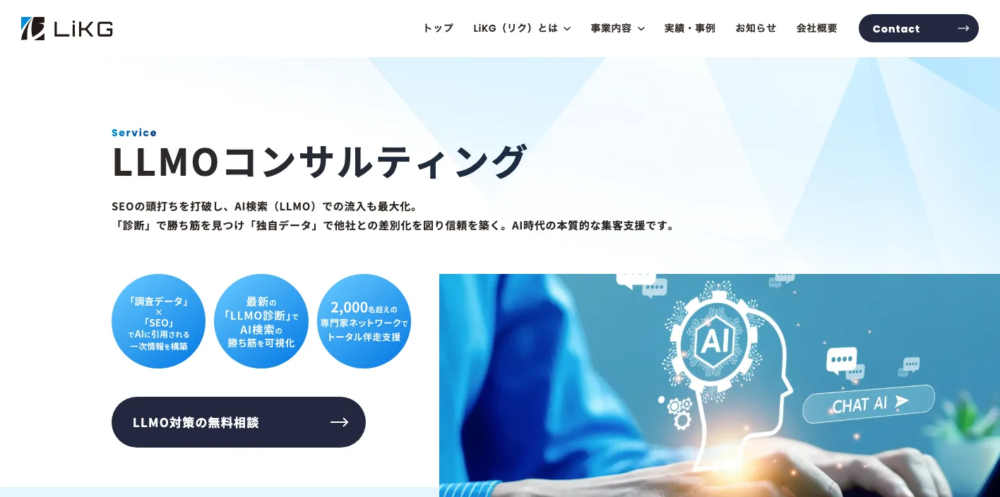
株式会社LiKGは、全国対応のLLMOコンサルティング会社です。公式サイトでは、LLMO診断、LLMO×SEOコンサルティング、EEAT強化記事制作を提供し、AI検索での露出状況調査や構造化データなどの改善支援を案内しています。
和歌山県内の取材、撮影、地域情報の整理は地元会社に依頼し、AI検索での見え方、質問設計、記事構成、引用状況の確認はLLMO専門会社に依頼する分担も有効です。高野山、白浜、熊野古道のように全国・海外から検索されるテーマや、BtoB製造業の専門情報を扱う場合は、全国対応の専門会社を比較に入れる価値があります。
和歌山県のLLMO会社を比較する際のポイント
ここでは、会社一覧とは別に、和歌山県でLLMO会社を選ぶときの見方を整理します。ポイントは、和歌山県を一つの市場として扱わないことです。和歌山市周辺、紀北、紀中、紀南、観光地、製造業、農水産品では、AIに聞かれる質問が違います。
和歌山市・海南市は生活商圏とBtoBを分ける
和歌山市と海南市は、県内人口や企業活動が集まりやすい地域です。医療、士業、住宅、不動産、教育、美容、飲食、採用などの生活サービスと、製造業、化学、物流、部品、業務支援のBtoBが混ざります。AIに聞かれる質問も「近くでおすすめ」だけでなく、「法人対応できるか」「実績はあるか」「費用はどれくらいか」「採用に強いか」のように分かれます。
この地域では、ローカルSEOやMEOだけでなく、会社概要、サービスページ、実績、料金、採用FAQを整える力が必要です。制作会社を選ぶときは、見た目のデザインだけでなく、問い合わせや採用に直結するページ設計をできるかを確認してください。
たとえば同じ「和歌山市のおすすめ会社」でも、歯科医院を探す人、税理士を探す人、製造業の外注先を探す人では、AIに求める答えがまったく違います。生活サービスでは営業時間、駐車場、予約方法、対応できる悩みが重要になり、BtoBでは設備、納期、対応業界、担当者の専門性が重要になります。LLMO会社には、この違いを1ページに詰め込まず、ページやFAQを分けて整理できるかを確認しましょう。
紀北は大阪・奈良との比較質問を意識する
岩出市、紀の川市、橋本市、かつらぎ町、九度山町、高野町などの紀北エリアは、大阪府や奈良県との移動・商圏が重なります。AIには「大阪から行きやすい」「橋本で対応できる」「高野山観光の前後に使える」「和歌山と奈良どちらが便利か」といった比較質問が入りやすくなります。
この地域では、対応エリア、交通、駐車場、配送、訪問範囲、予約方法を明確にすることが重要です。近隣比較も見たい場合は、奈良県でおすすめのLLMO会社10選や大阪府でおすすめのLLMO会社10選も参考になります。
有田・日高・みなべは地場産品の一次情報を出す
有田みかん、湯浅醤油、みなべの梅、日高の農水産品のように、和歌山県には産地名そのものがブランドになる商品が多くあります。AIは、商品名だけでなく、産地、旬、品種、保存方法、食べ方、贈答、配送、事業者のこだわりを組み合わせて回答を作ります。
この地域の事業者は、EC商品ページだけでなく、作り手紹介、よくある質問、収穫時期、食べ方、法人ギフト、返品・配送条件まで整える必要があります。制作会社を選ぶときは、写真撮影、文章作成、EC、SEO、SNSまで見られるかが重要です。
とくにギフト需要やふるさと納税、EC販売を狙う事業者は、価格や商品写真だけでは弱くなります。AIは「誰に贈るとよいか」「どの時期に買うべきか」「家庭用と贈答用の違い」「訳あり品の扱い」「法人向け対応」まで説明できる情報を探します。商品ページ、読み物、FAQ、配送案内をつなげる設計ができる会社を選ぶと、単発の記事より長く効く資産になります。
田辺・白浜・新宮・串本は観光客の移動質問に答える
田辺市、白浜町、新宮市、那智勝浦町、串本町は、温泉、海、熊野古道、世界遺産、宿泊、交通の質問が中心になります。AIには「何泊必要か」「雨の日はどうするか」「大阪からの行き方」「子ども連れ」「外国語対応」「周辺観光」「予約は必要か」といった質問が入りやすいです。
観光事業者がLLMOを進めるなら、宿泊プランや施設紹介だけでなく、アクセス、モデルコース、所要時間、季節ごとの注意点、キャンセル条件、周辺施設、外国人向け情報を公式サイトに出す必要があります。AIは旅行者の質問に対して、具体的な条件を持つページを参照しやすくなります。
また、紀南の観光は移動時間が長く、天候や交通手段によって満足度が変わります。公式サイト側に「車の場合」「電車とバスの場合」「大阪方面から」「名古屋方面から」「雨の日」「小さな子ども連れ」などの条件別情報があると、AIが旅行計画の回答に組み込みやすくなります。宿泊施設や体験事業者は、周辺施設との位置関係や所要時間も一次情報として持っておくべきです。
製造業は設備、素材、品質管理、技術相談のページを整える
和歌山県工業技術センターは、化学製品、品質管理、分析、ものづくり、デジタル技術など県内企業の技術支援を行っています。これは、県内に技術情報を整理すべき製造業があるということでもあります。AI検索でも、BtoBの比較では「何が作れるか」「どの素材に対応できるか」「どの工程までできるか」が重要になります。
製造業のLLMOでは、設備一覧、加工範囲、対応素材、検査体制、納期、事例、品質管理、技術相談の流れをページ化してください。営業資料にだけ書いている情報をWebに出すことで、AIが回答に使える材料が増えます。
和歌山県のLLMO会社に依頼する費用相場
和歌山県でLLMOを依頼する費用は、診断だけなのか、記事制作まで頼むのか、サイト制作や撮影まで含めるのかで変わります。特に和歌山県は観光、農水産品、製造業、地域店舗が混在するため、必要な一次情報の量で金額が変わりやすいです。
無料〜10万円：診断、簡易調査、優先順位づけ
最初は、AIに自社名やサービス名を聞いたときにどう出るか、競合がどのように紹介されるか、公式サイトの情報が足りているかを確認します。和歌山市の店舗や士業なら、Googleマップ、公式サイト、口コミ、FAQの整合性を見るだけでも改善点が出ます。
この段階では、いきなり記事を増やす必要はありません。まず、どの質問でAIに出たいかを決め、会社概要、サービス、料金、実績、よくある質問のどこが弱いかを確認します。AIMAの無料LLMO診断のような入口を使うと、優先順位を決めやすくなります。
月5万〜15万円：既存ページ改善、FAQ、記事制作
月5万〜15万円の範囲では、既存ページの改善、FAQ追加、コラム制作、内部リンク、構造化データの見直し、簡単な競合調査が中心になります。和歌山県内の小規模店舗、クリニック、士業、宿泊施設、農産品ECなら、まずこの価格帯から始めるケースが現実的です。
安く始める場合でも、記事だけを納品して終わる会社は避けたほうが安全です。和歌山では、地名、産地名、観光地名、商品名の組み合わせが多いため、記事とサービスページ、商品ページ、アクセス情報をつなげる設計が必要です。
月15万〜30万円：SEO、MEO、LLMO、広告、分析をまとめて改善
月15万〜30万円になると、SEO、MEO、LLMO、広告、アクセス解析、競合調査、コンテンツ改善を一体で進めやすくなります。和歌山市周辺の複数店舗、白浜や高野山の観光事業、採用に困っている会社、BtoB製造業では、この価格帯のほうが進めやすいことがあります。
この段階では、AI回答だけでなく、問い合わせ、予約、資料請求、採用応募、EC売上、マップ経由の来店まで見ます。和歌山県は商圏が広く、移動距離も大きいため、アクセスや対応エリアを含む導線改善が成果に直結します。
30万円〜数百万円：サイト制作、撮影、動画、EC、多言語まで含む場合
ホームページを作り直す、写真撮影や動画制作を入れる、ECを作る、予約システムを入れる、観光情報を多言語化する場合は、初期費用が30万円から数百万円になることがあります。白浜、高野山、熊野古道、那智勝浦、串本の観光事業や、地場産品EC、製造業の採用サイトではこの規模になりやすいです。
費用が大きい場合は、見積もりの中身を「ページ数」だけで見ないでください。必要なのは、AIに引用される一次情報です。写真、実績、料金、FAQ、モデルコース、配送条件、加工範囲、採用情報など、どの情報を新しく作るのかを確認しましょう。
和歌山県のLLMO会社に関するよくある質問
和歌山県内の会社に依頼したほうがいいですか？
対面取材、写真撮影、観光地や地場産品の文脈整理が必要なら県内会社は強いです。一方で、AI検索でどう引用されるかの診断、FAQ設計、構造化データ、記事改善は県外のLLMO専門会社と組み合わせても問題ありません。
和歌山市と田辺・白浜ではLLMOの進め方は変わりますか？
変わります。和歌山市は生活サービス、医療、士業、採用、BtoB、製造業の質問が多く、田辺・白浜・新宮・串本は観光、宿泊、交通、季節、外国人観光客向けの質問が増えます。地域ごとにAIに聞かれる言葉を分ける必要があります。
観光業でもLLMOは必要ですか？
必要です。高野山、熊野古道、白浜、那智勝浦、串本などでは、行き方、所要時間、宿泊、温泉、天候、季節、外国語対応などをAIに聞かれやすいです。公式サイトに最新の一次情報を整理しておくと、AI回答に使われやすくなります。
みかん、梅、魚介などの地場産品にもLLMOは使えますか？
使えます。産地、品種、旬、保存方法、食べ方、ギフト対応、EC、事業者情報を整理すると、AIが比較回答を作る材料になります。商品ページだけでなく、FAQ、作り手の紹介、出荷時期、購入方法まで整えることが重要です。
製造業やBtoB企業にも効果がありますか？
あります。和歌山市、海南市、有田市、紀の川市、橋本市などの製造業では、設備、加工範囲、素材、品質管理、納期、実績をWebに出すことで、AIが「対応できる会社」を説明しやすくなります。
MEO対策とLLMO対策は何が違いますか？
MEOはGoogleマップで見つけてもらう対策です。LLMOはChatGPTやAI Overviewなどの回答で、自社情報を正しく引用・参照してもらう対策です。店舗、宿泊、クリニック、士業では、MEOとLLMOを同時に整えるのが効率的です。
和歌山県のLLMO対策の費用はどれくらいですか？
小さく始めるなら月5万〜15万円、本格的な改善なら月15万〜30万円以上が目安です。サイト制作、写真撮影、動画、EC、多言語、予約システム、採用ページまで含めると、初期費用が数十万円から数百万円になることもあります。
最初に何を相談すればいいですか？
まず「AIに何と聞かれたときに出たいか」を10個書き出してください。和歌山市の生活サービス、白浜の宿泊、高野山の観光、海南の製造、有田のみかん、みなべの梅など、地域と質問をセットで整理すると、必要なページが見えます。
和歌山県でLLMO会社を選ぶなら、地域名と質問の種類を先に分けましょう
和歌山県でLLMO会社を選ぶときは、和歌山市周辺の生活商圏、紀北の大阪・奈良近接、紀中の農水産品、紀南の観光、製造業やBtoBを同じ言葉でまとめないことが重要です。AIは、地域名、目的、条件、一次情報が具体的なほど回答を作りやすくなります。
まずは、自社がAIに聞かれたい質問を10個書き出してください。次に、その質問に答える公式ページ、FAQ、実績、料金、会社概要、写真、アクセス、配送、予約、採用情報があるかを確認します。足りない情報が多ければWeb制作や取材に強い会社、既存サイトがあるならSEO/LLMO改善に強い会社を選ぶのが現実的です。
和歌山県内の会社だけで完結する必要はありません。地域取材や撮影は地元会社、LLMO診断や記事改善は専門会社という分担もできます。小さく始めたい場合は、AIMAのLLMO支援サービスや無料診断も使い、どの質問から対策すべきかを先に整理してください。